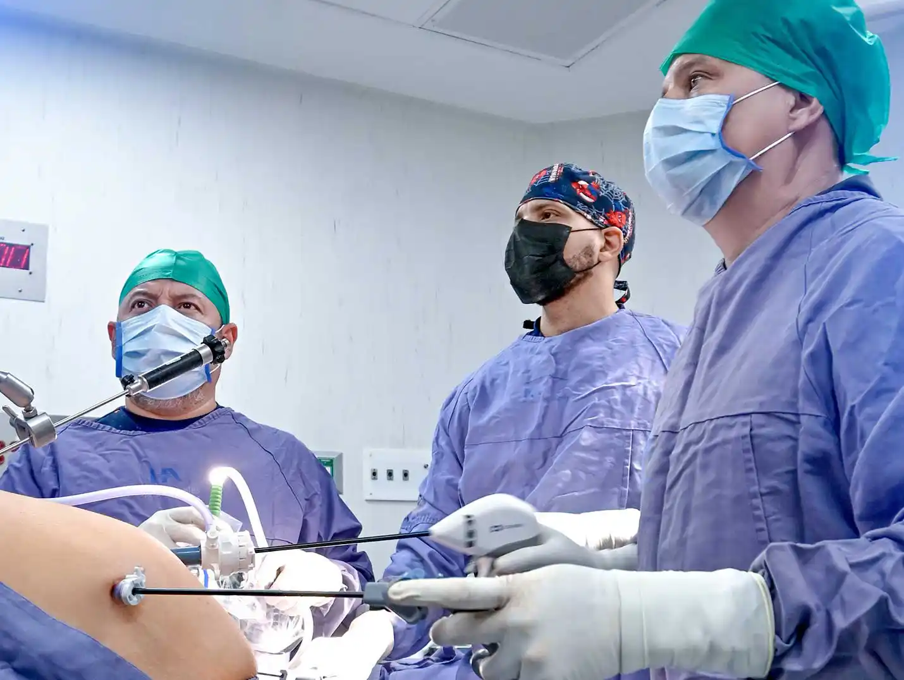
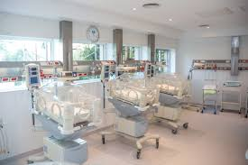
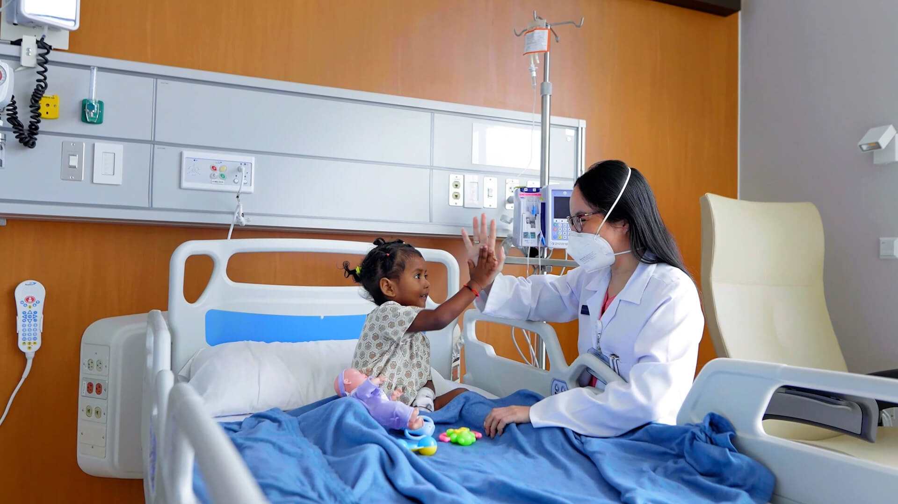
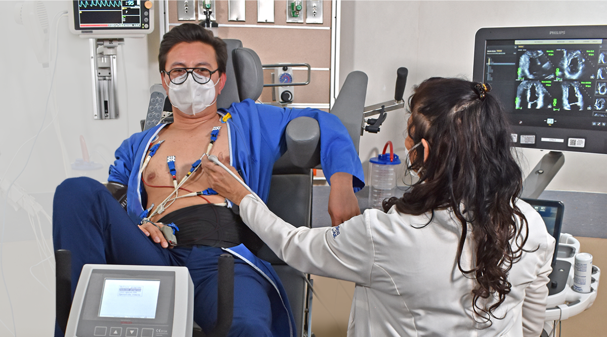
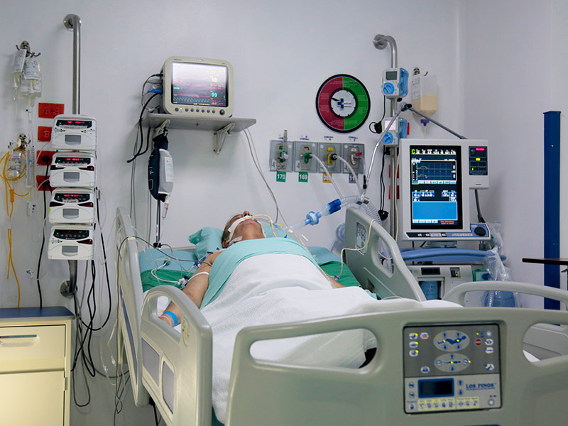

-
Urgencias y Emergencias
Servicio disponible las 24 horas para atender casos críticos
como accidentes, infartos,
traumatismos graves o complicaciones médicas repentinas. Equipado con tecnología
avanzada y personal especializado para estabilizar pacientes y derivarlos a las áreas
correspondientes.
Agendar cita
-

Cirugía General y Especializada
Abarca procedimientos quirúrgicos programados o de emergencia,
desde apendicectomías
hasta operaciones cardíacas. Incluye cirugía laparoscópica mínimamente invasiva y
seguimiento postoperatorio para una recuperación segura.
Agendar cita
-

Maternidad y Neonatología
Atención integral para embarazos de bajo y alto riesgo, partos
naturales, cesáreas y
cuidados posnatales. Incluye unidad de neonatología para recién nacidos prematuros o con
complicaciones, con incubadoras y monitoreo constante.
Agendar cita
-

Pediatría
Servicio dedicado a la salud infantil, enfocado en prevención,
diagnóstico y tratamiento
de enfermedades en pacientes desde recién nacidos hasta adolescentes. Incluye
vacunación, control de crecimiento y manejo de patologías crónicas.
Agendar cita
-
Oncología
Diagnóstico y tratamiento multidisciplinario del cáncer, con
terapias como quimioterapia,
radioterapia e inmunoterapia. Ofrece acompañamiento psicológico y programas de
rehabilitación para mejorar la calidad de vida del paciente.
Agendar cita
-

Cardiología
Prevención, evaluación y manejo de enfermedades
cardiovasculares. Incluye pruebas como
electrocardiogramas, ecocardiogramas, cateterismos y rehabilitación cardíaca
post-infarto.
Agendar cita
-

Terapia Física y Rehabilitación
Programas personalizados para recuperar movilidad tras
cirugías, accidentes o
enfermedades neurológicas. Utiliza técnicas como hidroterapia, electroestimulación y
ejercicios adaptados.
Agendar cita
-

Salud Mental
Atención psiquiátrica y psicológica para trastornos como
depresión, ansiedad, bipolaridad
o adicciones. Incluye terapia individual, grupal y hospitalización breve en casos de
crisis agudas.
Agendar cita
-

Medicina Interna
Diagnóstico y tratamiento integral de enfermedades que afectan
a órganos internos, como
diabetes, hipertensión, enfermedades respiratorias y gastrointestinales. El servicio
actúa como eje coordinador entre distintas especialidades para un abordaje clínico
completo.
Agendar cita
-

Unidad de Cuidados Intensivos
Área especializada en la atención de pacientes en estado
crítico que requieren vigilancia
continua, soporte vital avanzado y monitoreo permanente. Cuenta con equipo médico
multidisciplinario y tecnología de punta para intervenciones inmediatas.
Agendar cita
-
Ginecología y Salud Femenina
Atención especializada en salud reproductiva y ginecológica.
Incluye control prenatal,
detección de cáncer ginecológico, tratamientos hormonales, planificación familiar y
manejo de enfermedades como endometriosis o síndrome de ovario poliquístico.
Agendar cita
-
Imagenología y Diagnóstico por Imágenes
Servicio equipado con tecnología como rayos X, ultrasonido,
tomografía computarizada (CT)
y resonancia magnética (RM). Facilita diagnósticos precisos y oportunos para diversas
condiciones médicas, apoyando a todas las especialidades clínicas.
Agendar cita